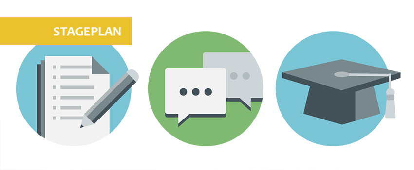

<div class="row medium-8 large-7 columns">
  <div class="blog-post">
    <h3 class="title--bloghead"> Stage plan en doelen <small class="title--blogdate"></small></h3>
    
    <p class="text--blog">Deze stageperiode vormde voor mij een periode van leren om mee tekomen in een teamverband en aan bestaande applicaties werken, leren met nieuwe software om te gaan en leren om met klanten om te gaan. Daarom zijn dit mijn belangrijkste leerdoelen:<br>
    <br><br><b>Activiteiten (voor dat ik begon met stage lopen)</b>
    <br> -  Een keer mee gaan naar een klant
    <br> -  Voor en met klanten mogen werken
    <br> -  Verdiepen in Html
    <br> -  Verdiepen in Css
    <br> -  Verdiepen in Java Script
    <br> -  Iconen designen voor een applicatie
    <br> -  Mee werken en designen aan een applicatie
    <br> -  Styl sheets voor CCAP maken.
    <br> -  Ontwerpen van promotie materiaal voor het bedrijf
    <br><br><b>Activiteiten (wat ik wist dat ik moest doen voor dat ik stage ging lopen)</b>
    <br> -  Styl sheets voor CCAP maken
    <br> -  Iconen designen
    <br> -  Mee designen aan een applicatie
  </p>
  </div>
</div>
